Transparent tool use
Every agent action appears as a human-readable tool card. Related calls group together so a burst of file reads stays compact; expand any group to inspect individual steps, arguments, and errors.

Free & open source · Desktop-native · macOS 26+
Copse pairs agent chat with Monaco, a terminal, and git in one window. The agent reads and edits your project — but every file write and shell command waits for your approval. No backend service between you and the model.

Screenshots from current Copse builds — agent chat, editor, terminal, git, roadmap, hooks, and provider settings in one desktop window.
Multi-turn chat with readable tool cards, nested subagents, inline plans, and rich markdown — including diagrams when the agent needs to explain structure.
Every agent action appears as a human-readable tool card. Related calls group together so a burst of file reads stays compact; expand any group to inspect individual steps, arguments, and errors.
When the main agent needs to explore broadly, it can spawn subagents that run their own tool loops. Collapsed cards keep the timeline tidy; expand to follow nested work.

The agent keeps a to-do and plan list inside the conversation so you can track multi-step work across long sessions without losing the thread.

Mermaid diagrams, code blocks with copy buttons, follow-up suggestion chips, and a message queue while the agent is still running. Export threads as JSONL when you need to review a run outside the app.

Proposed changes never land silently. Review diffs in Monaco, inspect git status, and attach editor selections directly to your next prompt.
Agent-proposed file changes enter a staged-diff queue. Review hunks in Monaco, then accept or reject each change — nothing writes to disk until you approve it.
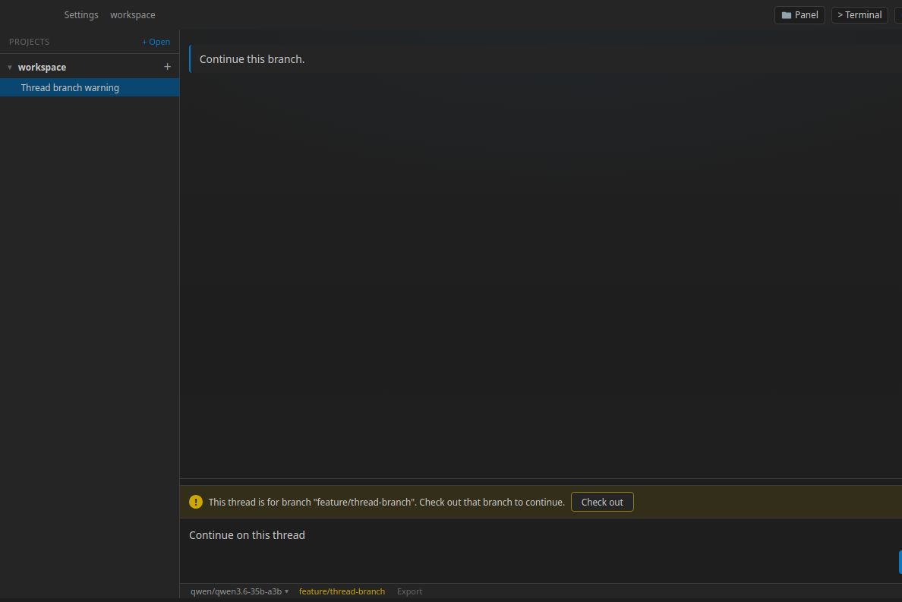
Select code in the editor and attach it directly to your prompt. Copse keeps file context, line ranges, and attachments visible in the composer.

The Changes panel lists staged, unstaged, and untracked files. Open inline diffs — including images — without switching to another app. Branch status appears in the footer and composer when your thread and git branch diverge.

Start a thread on a shared checkout or spin up an isolated git worktree so parallel agent runs do not stomp each other. Choose the mode from the composer before the first message.
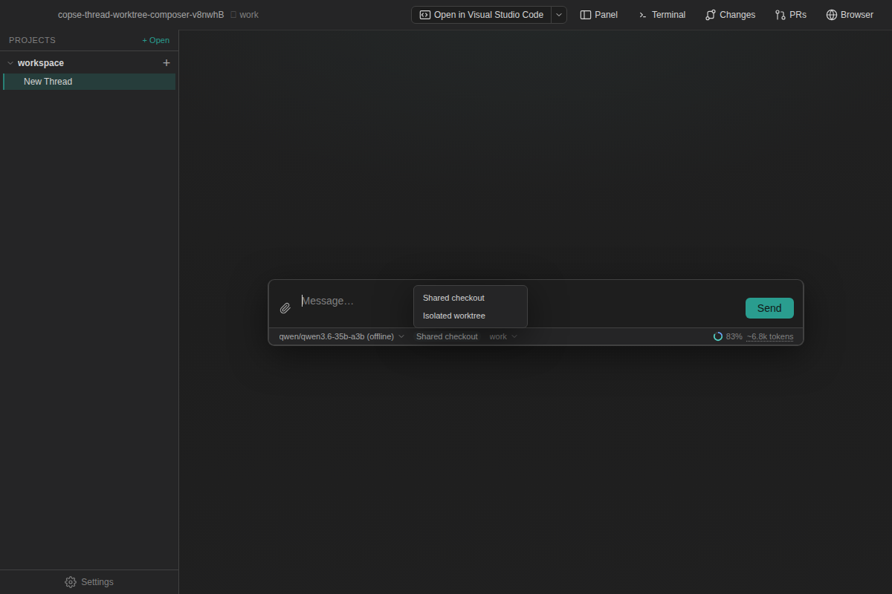
Keep future-work prompts and durable project knowledge in panes beside the agent — not scattered across sticky notes and chat history.
Jot prompts for work you have not started yet, track status, import open GitHub issues, and run resolution review against commits and PR evidence. Reopen the thread that originally tackled an item, or find items from Cmd / Ctrl+P.
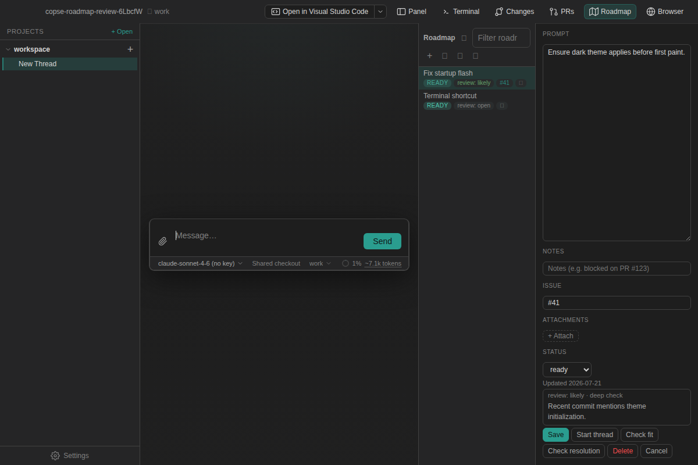
Press Cmd / Ctrl+P to search and jump to roadmap items, project files, or command palettes — no mouse needed.
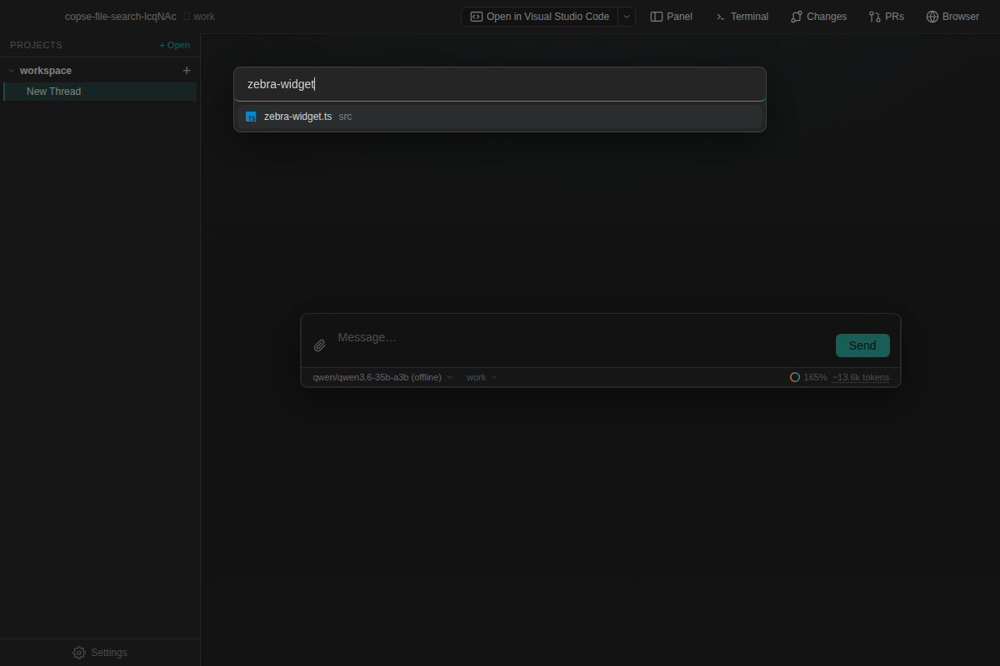
Browse and edit persistent knowledge notes in a dedicated pane — the same OKF store that backs roadmap items. Pop a pane out into its own window when you want more room.
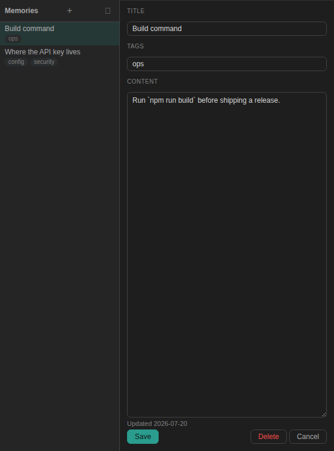
Regex search, semantic indexing, terminal output, and an embedded browser — all reachable from the same right-hand panel as your file tree.
Ask questions in natural language and get ranked code hits from a project index. Results render as rich markdown explore cards inside the conversation.

The right panel switches between Explorer, Changes, Terminal, Browser, and a
GitHub PR view. Run shell commands next to the agent, reference open shells with
@shell mentions, and Cmd/Ctrl-click file paths in output to jump to
the editor.
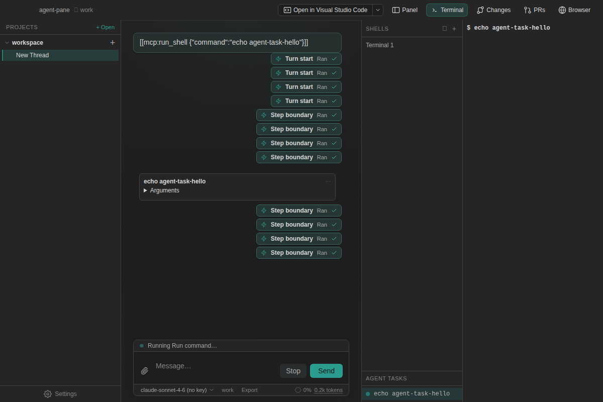
Open multiple browser tabs inside Copse for docs, staging sites, or quick visual checks while the agent keeps working in chat. Browser automation is off by default and origin-gated when you turn it on.
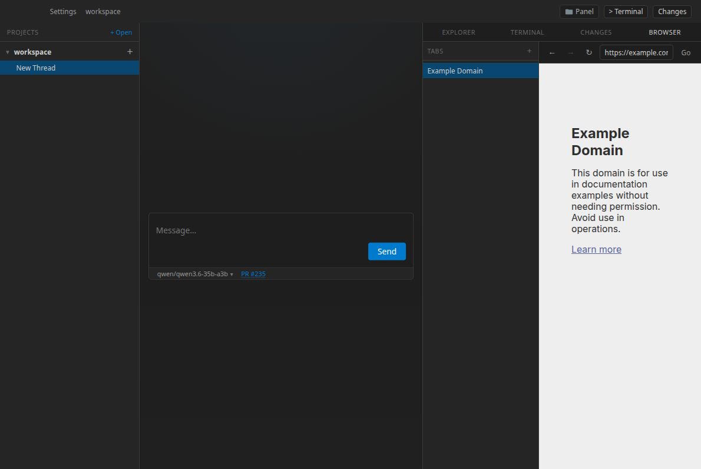
Inspect linked PRs, read descriptions, and open file diffs without leaving
Copse. Actions like approve, mark ready, and re-run failed CI are available
when gh is configured.
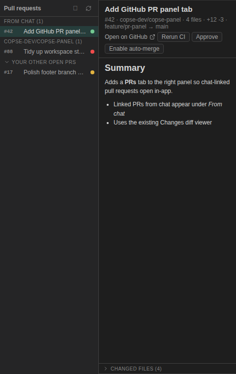
Provider retention and training policies are visible before you send a prompt. OpenRouter requests default to zero-data-retention, non-training endpoints.
Settings → Providers badges each preset with its default retention and training
posture. OpenRouter routing keeps ZDR-only and training-exclusion toggles on by
default; direct OpenAI requests send store: false.
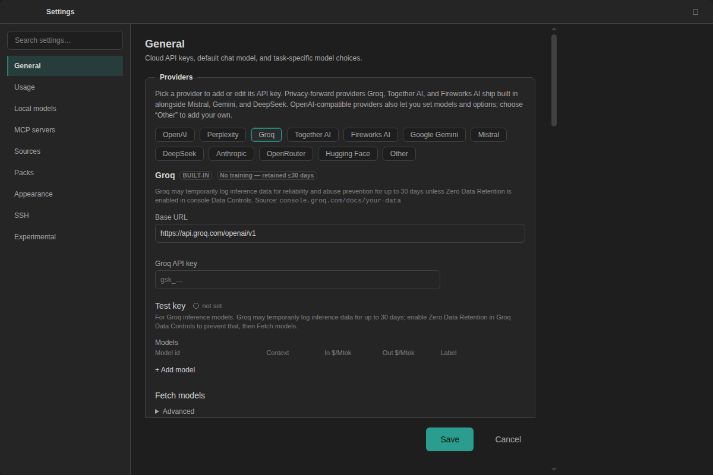
Track token usage per thread, compare cloud spend, and explore a value map that plots model intellect against cost — toggle between price per million tokens and Artificial Analysis cost-per-task estimates.
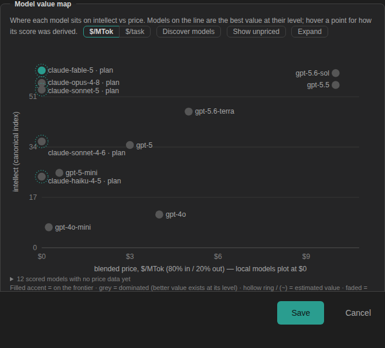
Route everyday tasks to a fast local model and reserve cloud models for harder work. The onboarding wizard walks through API keys, OpenRouter, LM Studio, and per-role routing in a few steps.
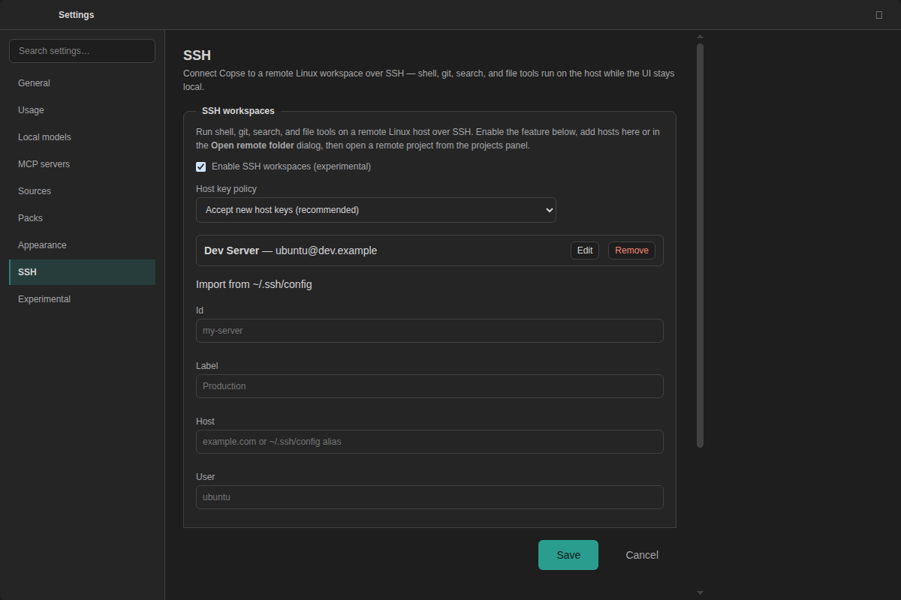
MCP servers, Cursor-compatible hooks and skills, feature packs, and custom tools — all with approval on every external call.
Copse is an MCP host: add servers in project or global config, see connection status in Settings, and approve tool calls before they run.

Cursor and Claude hooks run through a unified registry with sandbox-by-default execution. Hook executions appear as readable cards in the agent timeline so you can see what fired and when.
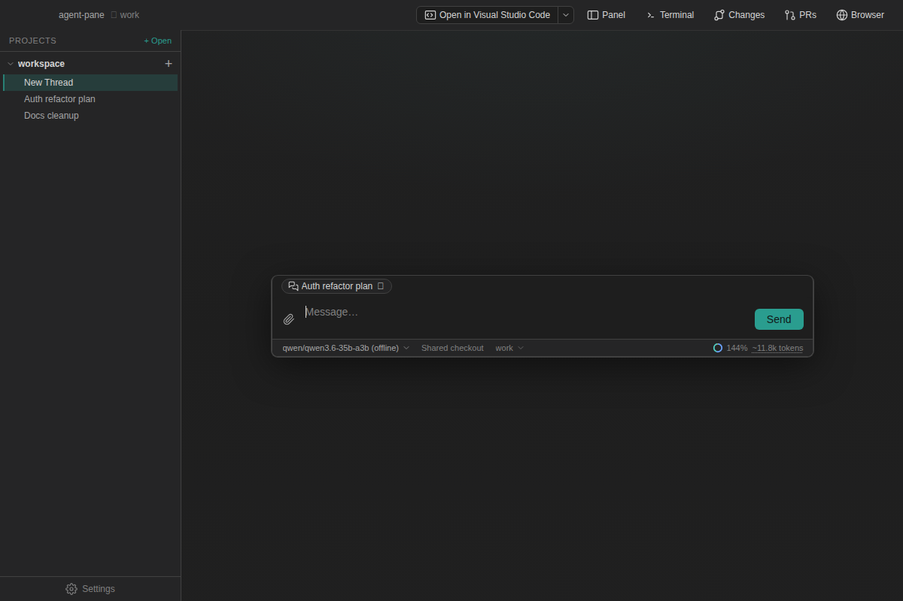
Install and configure declarative feature packs from Settings → Packs. Each pack can expose its own settings panel while staying scoped to the hook platform lifecycle.
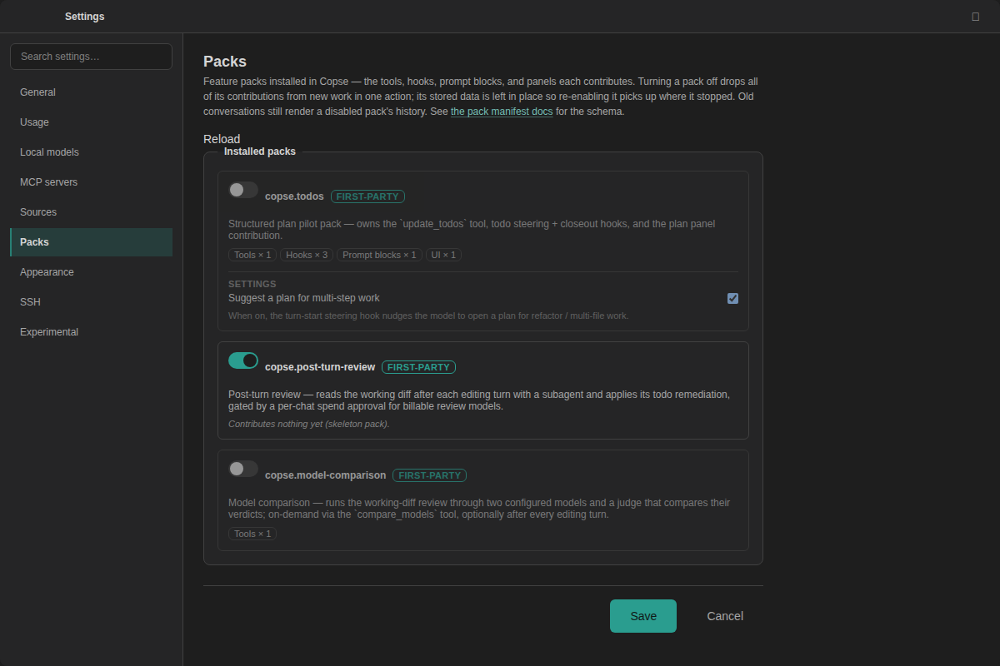
A full coding environment — not a chat tab in a browser.
| Area | Capability | Notes |
|---|---|---|
| Layout | Three-pane IDE — projects, chat, editor/terminal/git | Monaco editor, pane pop-out, open in external editor |
| Agent | Multi-turn chat with tool calls, subagents, message queue, and in-chat find | @ past threads; greppable files under ~/.copse |
| Parallel work | Shared checkout or isolated git worktree per thread | Thread-scoped staged diffs and backup state |
| Planning | Roadmap backlog, resolution review, Memories knowledge notes | OKF store; roadmap items in quick-open (Cmd/Ctrl+P) |
| Safety | Approval gates for shell, MCP, file writes, and background tasks | macOS seatbelt sandbox for agent shell; sandboxed terminal PTYs |
| Search | Regex and semantic codebase search | Bundled gortex indexing |
| Integrations | MCP host, Cursor skills/hooks, feature packs, custom JS tools | Reads .cursor/mcp.json, .cursor/skills/, hook configs |
| Models | Anthropic, OpenAI, OpenRouter, Mistral, Gemini, DeepSeek, Groq, Together, Fireworks, Perplexity, LM Studio | Cost/intellect value map; route local vs cloud by role |
| Privacy | Provider retention/training badges; OpenRouter ZDR routing on by default | OpenAI store: false; see Privacy Policy |
| Shell | Integrated terminal, run_background, read_terminal, @shell mentions |
Cmd/Ctrl-click paths in terminal output to open files |
| GitHub | Changes panel, PR viewer, inline diffs | PR actions when gh CLI is available |
| Remote | SSH-backed project workspaces | Open folders on configured remote hosts |
| Storage | API keys in OS secure storage; threads as files under ~/.copse |
Opt-in env scan for keys in your shell profile |
Signed, notarized macOS builds ship on stable and beta release channels. Source builds remain available for development on any platform Copse compiles on.
Requires macOS 26 or newer on Apple Silicon or Intel. Pick a
stable release (X.Y.Z) or a beta prerelease
(X.Y.Z-beta.N) from GitHub Releases — both channels auto-update inside
the app.
On first launch, connect Anthropic, OpenAI, OpenRouter, or a local endpoint such as LM Studio. Keys are stored in the OS keychain when available. Already export keys in your shell? Use Scan environment in Settings → General — nothing is read until you click Scan.
Node.js 22.18+ required. Useful for Linux/Windows development or contributing.
git clone https://github.com/copse-dev/agent-pane.git && cd agent-pane
&& npm install && npm run dev
Run npm run pack:mac locally to produce an unpacked
.app under release/ — distinct from the signed release
pipeline.
Linux and Windows builds are useful for source development but are not supported general- availability targets today. See SUPPORT.md for the supported platform matrix.